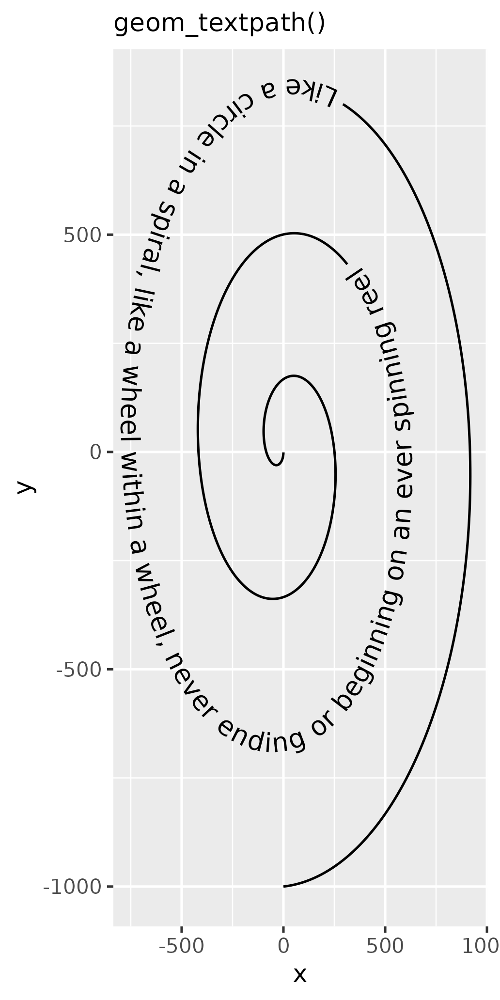

Text on a path
The goal of the geomtextpath package is to directly label line-based plots with text that is able to follow a curved path. It is an extension of the ggplot2 plotting library. Those already familiar with ggplot2 and the geom_path() and geom_text() geometries, can easily display a path or some text.
t <- seq(5, -1, length.out = 1000) * pi
spiral <- data.frame(
x = sin(t) * 1000:1,
y = cos(t) * 1000:1
)
rhyme <- paste(
"Like a circle in a spiral, like a wheel within a wheel,",
"never ending or beginning on an ever spinning reel"
)
p <- ggplot(spiral, aes(x, y)) +
coord_equal(xlim = c(-1000, 1000), ylim = c(-1000, 1000))
p + geom_path() + labs(subtitle = "geom_path()")
p + geom_text(
data = data.frame(x = 0, y = 0),
size = 4, label = rhyme
) + labs(subtitle = "geom_text()")

The geomtextpath extension follows these ggplot2 conventions and displays the path and the text by projecting the text along the curve.
p + geom_textpath(
size = 4, label = rhyme
) + labs(subtitle = "geom_textpath()")
Overview
All of the line-based geom layers in ggplot2 indicated below, have text and text-box equivalents in the geomtextpath package:
| ggplot geom | Text equivalent | Label equivalent |
|---|---|---|
geom_path |
geom_textpath |
geom_labelpath |
geom_segment |
geom_textsegment |
geom_labelsegment |
geom_line |
geom_textline |
geom_labelline |
geom_abline |
geom_textabline |
geom_labelabline |
geom_hline |
geom_texthline |
geom_labelhline |
geom_vline |
geom_textvline |
geom_labelvline |
geom_density |
geom_textdensity |
geom_labeldensity |
geom_smooth |
geom_textsmooth |
geom_labelsmooth |
geom_contour |
geom_textcontour |
geom_labelcontour |
geom_density2d |
geom_textdensity2d |
geom_labeldensity2d |
geom_sf |
geom_textsf |
geom_labelsf |
Each of these aims to provide the same functionality as the equivalent ggplot2 geom, but with the addition of a label aesthetic that will automatically label the line, even if it follows a curved path.
Stat layers
Although we made an effort to provide text-path equivalents for commonly used stat-based geoms, such as geom_density() or geom_smooth(), there is not an equivalent for every stat-based geom. However, the flexibility of ggplot2 allows that most stats can be combined with any geom. Provided that the stat provides path-like output, this means that for example stat_ellipse() can be combined with geom_textpath() by setting geom = "textpath" or geom = "labelpath".
ggplot(iris, aes(Sepal.Width, Sepal.Length, colour = Species)) +
geom_point(alpha = 0.3) +
stat_ellipse(
aes(label = Species),
geom = "textpath", hjust = 0.25,
) +
theme(legend.position = "none")Alternatively, one could also specify the stat inside geom_textpath() or geom_labelpath().
ggplot(data.frame(x = 0)) +
geom_labelpath(
stat = "function",
fun = ~ 1 / (1 + exp(-.x)),
label = "Sigmoid function"
) +
xlim(-6, 6)Angles across aspect ratios
The mechanism underlying the text positioning will take account of the plotting window however it is rescaled. This means text continues to stick together and follow the path at the correct angle as the plotting window changes in size or in aspect ratio. This is all done in the background, without the need to call your plotting code again every time the window is resized. For example, here is the same plot drawn with different dimensions:
p + geom_textpath(
size = 4, label = rhyme
) + coord_cartesian() + labs(subtitle = "geom_textpath()")
#> Coordinate system already present. Adding new coordinate system, which will replace the existing one.
p + geom_textpath(
size = 4, label = rhyme
) + coord_cartesian() + labs(subtitle = "geom_textpath()")
#> Coordinate system already present. Adding new coordinate system, which will replace the existing one.
How does it work?
At the heart of {geomtextpath} is textpathGrob(). This is a type of graphical object (known as a “grob”), which is drawn by the {grid} graphics package on which {ggplot2} is built. Everything that you see in your plotting device when you draw a ggplot is made up of grobs.
grob <- textpathGrob(label = "My\nlabel", x = c(0.25, 0.75),
y = c(0.25, 0.75), id = c(1, 1))
grob
#> textpath[GRID.textpath.286]When a textpathGrob is created, it measures the dimensions of the given text label letter-by-letter with the {textshaping} package. The measurements are stored, along with the x, y values of the path and any graphics parameters such as color, linewidth and font.
grob$textpath$label[[1]]
#> glyph ymin xmin xmid xmax substring y_id
#> 1 M 0.1162109 0.00000000 0.07183160 0.14366319 1 2
#> 2 y 0.1162109 0.14388021 0.19314236 0.24240451 1 2
#> 3 l -0.1162109 0.00000000 0.02300347 0.04600694 1 3
#> 4 a -0.1162109 0.04622396 0.09722222 0.14822049 1 3
#> 5 b -0.1162109 0.14843750 0.20138889 0.25434028 1 3
#> 6 e -0.1162109 0.25434028 0.30555556 0.35677083 1 3
#> 7 l -0.1162109 0.35698785 0.37999132 0.40299479 1 3When a plot is drawn, or the plotting window is rescaled, the {grid} package always calls makeContent for each grob in the current display device. This makes information about the aspect ratio and absolute size of the current viewport available for further calculations to be made on-the-fly if necessary before anything is actually drawn.
The {geomtextpath} package was possible because the makeContent function is generic, meaning that we were able to create a makeContent.textpath function. This takes the letter dimensions stored in the grob, the x, y co-ordinates of the path stored in the grob, and the device dimensions, applying simple(ish) trigonometry to work out where each letter should be placed and at what angle. Once this is known, the path and its associated gap can be calculated. The actual drawing part is then done by dispatching this information to the grid functions textGrob and linesGrob, which directly draw the graphical objects on the plotting device.
grid::grid.newpage()
grid::grid.draw(grob)We have tried to make any calculations done inside the makeContent stage efficient, so that there is not a noticeable lag in the plot being redrawn when the window is rescaled.